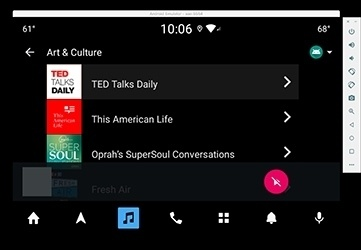

Here is the latest key project for Radioline that I've got the chance to co-lead: make an app for a new Google OS in privileged collaboration with the Google team. They were providing to us all the resources they just developed, such as the documentation and the emulator updates while we were supposed to think about a complete new service for the early adopters of the first connected cars. The main difficulty was finaly to imagine that new product while the development was made in less than 2 weeks. We started by listing all the Radioline existing features, the planned ones and define among the ones technically possible to make in the established short time, which ones will be the most useful for the users; indeed this app had to be shown for Google I/O 2019 at the presentation of the new OS. We had to found several partners such as TDF or Mediamobile that were able to make some technological parts for some features. My role here was to present the new interface to them via mockups and demo videos made on After Effects, as well as daily manage the developers in charge of the app development. In the same time, some of the videos were made to convince the car manufacturers to invest in the future app. The critical part on the interface was to succeed in presenting the clearest information hierarchy possible in the layout the Google team forced us to use. We worked so hard that the Google team were finally impressed by what we were able to achieve in such a short period of time! Most of the videos made are still confidential, so I can't show you that much and you won't see more on Radioline Youtube channel but please have a look, all videos were created/edited by me! 